STAR WARS: Дуэль на Набу
Кинематографичный набор для Scratch 3.0: фотореалистичные персонажи и корабли, фоны Набу, эффекты и готовый проект star_wars_duel.sb3. Есть и полностью векторная версия — star_wars_duel_vector.sb3.

Как это выглядит в игре
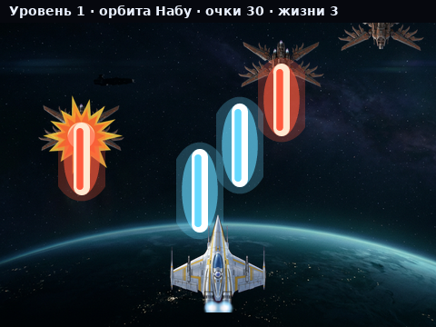
Уровень 1 — погоня
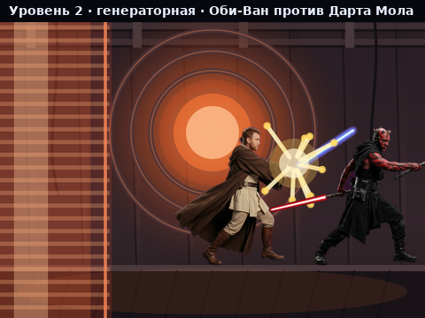
Уровень 2 — дуэль
Персонажи
Квай-Гон707×455 px · 2 костюм(а)
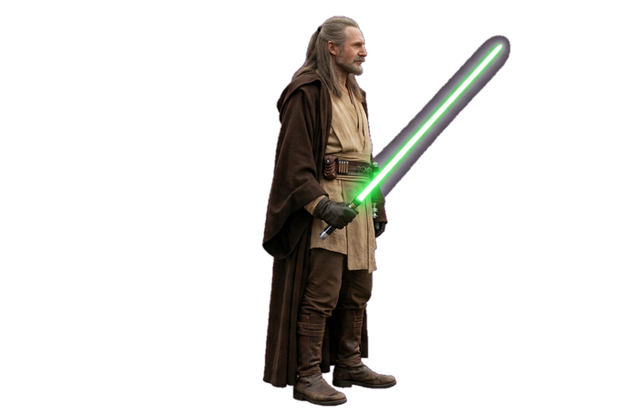
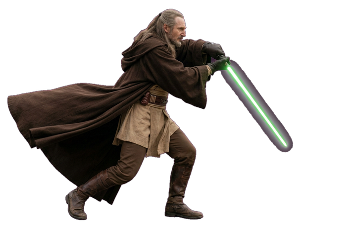
Оби-Ван887×455 px · 2 костюм(а)
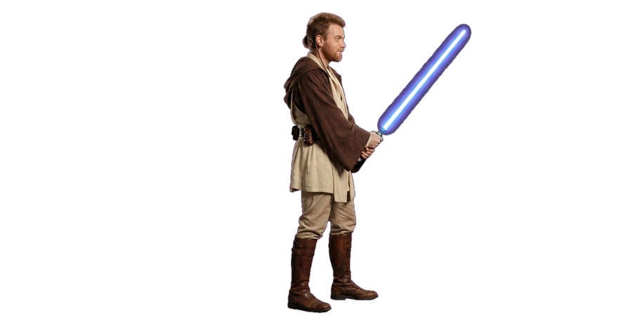
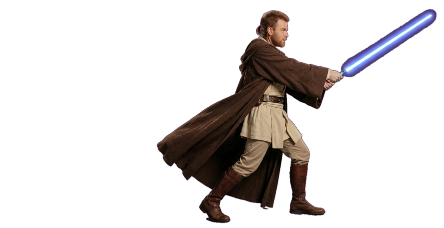
Дарт Мол1015×455 px · 1 костюм(а)
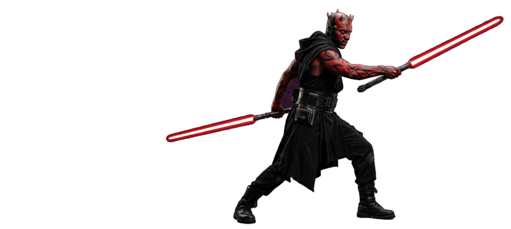
Корабли
Истребитель296×300 px · 3 костюм(а)
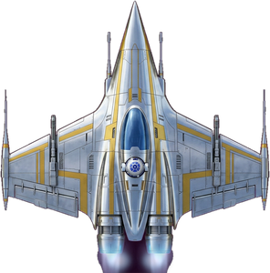
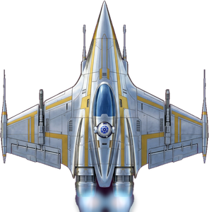
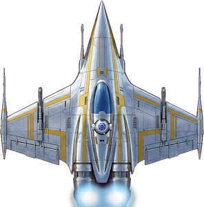
Дроид-истребитель476×260 px · 1 костюм(а)
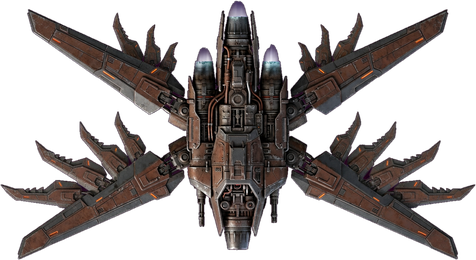
Фоны — 480×360
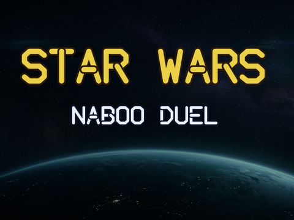
Титул
кинематографичный
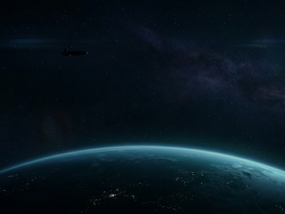
Космос
кинематографичный

Посадка на Набу
векторная версия — кинематографичная в работе

Генераторная
векторная версия — кинематографичная в работе
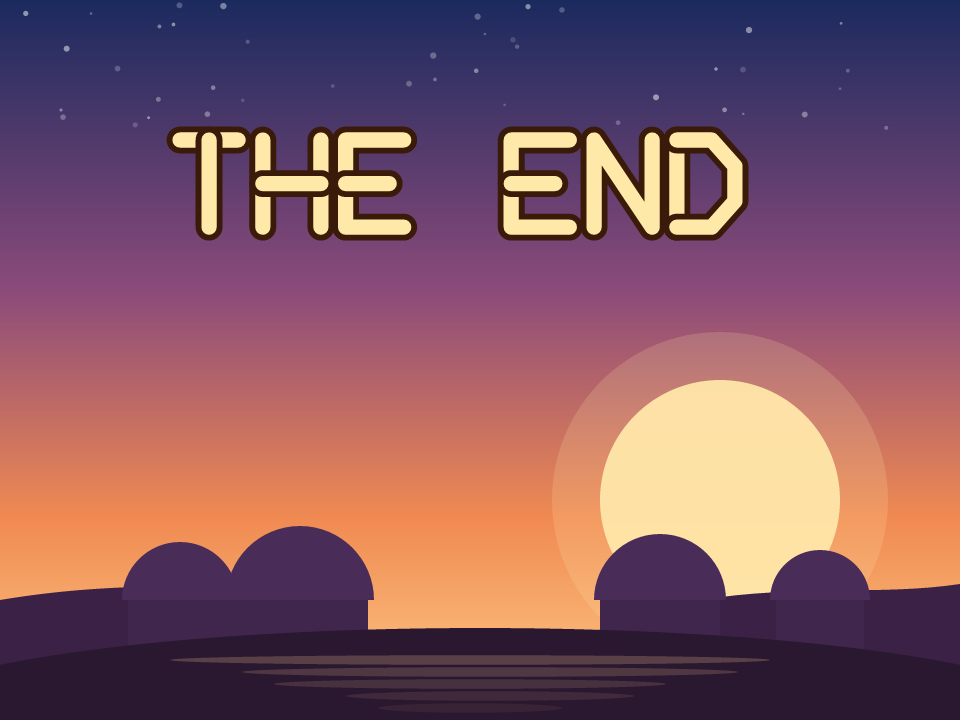
Победа
векторная версия — кинематографичная в работе
Эффекты
Лазер
Лазер врага
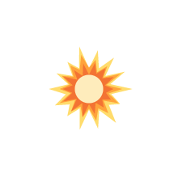
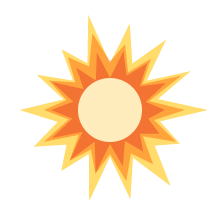
Взрыв
Искры
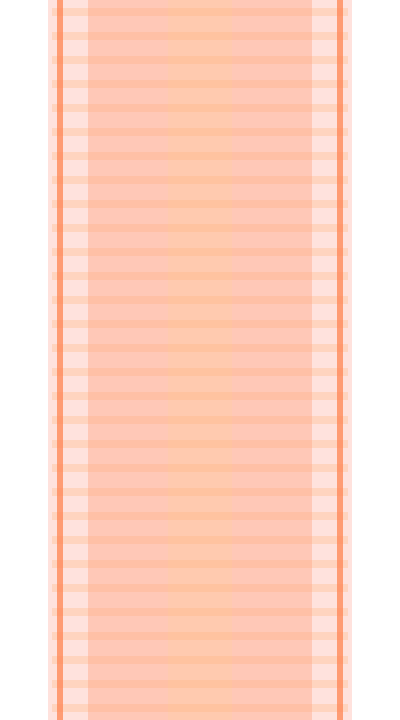
Плазма-врата
Как использовать
Играть сразу: откройте
star_wars_duel.sb3 на
scratch.mit.edu
(Файл → Загрузить с компьютера) или в Scratch Desktop. Зелёный флажок, затем ПРОБЕЛ.Брать картинки: кинематографичные спрайты — в
assets/film/sprites (PNG с прозрачностью), фоны — в
assets/film/backdrops, векторные эффекты — в assets/sprites (SVG).
Старая полностью векторная версия — star_wars_duel_vector.sb3 и папка
assets/backdrops.Управление
| Уровень | Клавиши | Действие |
|---|---|---|
| Титул | ПРОБЕЛ | начать игру |
| 1 — космос | ← → | маневрировать |
| 1 — космос | ПРОБЕЛ | огонь (+10 очков за дроида) |
| 2 — генераторная | ← → / A D | бежать |
| 2 — генераторная | ↑ / W | прыжок |
| 2 — генераторная | ПРОБЕЛ | удар мечом |
| 2 — генераторная | ↓ / S | блок |